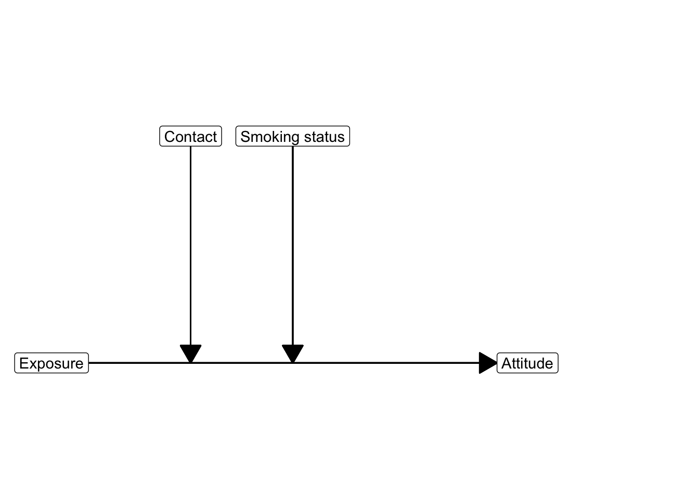
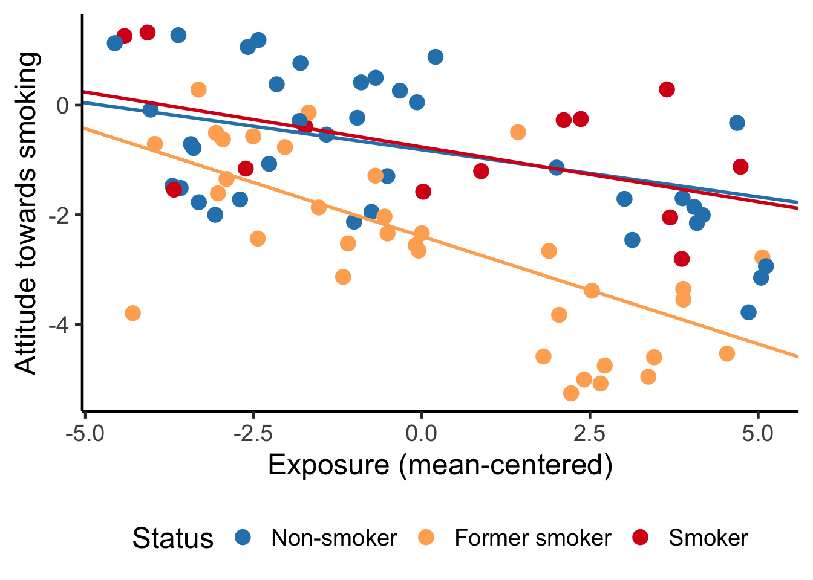

7 Regression Analysis With A Numerical Moderator
Key concepts: interaction variable, common support, simple slope, conditional effect, mean-centering.
Watch this micro lecture (Video 7.1) on regression models with a numerical moderator for an overview of the chapter.
Summary
My moderator is numerical. How can I construct different regression lines for different moderator values?
Chapter 6 shows us how we can include dichotomous and categorical variables as predictors and moderators in a regression model. Using dummy variables, we can analyze mean differences between groups and we can construct different regression lines for different groups (moderation). A graph showing the different regression models for different moderator groups communicates the results of a moderation model in an attractive way.
What if our moderator is not dichotomous or categorical but numerical? For example, the effect of exposure to an anti-smoking campaign on attitude towards smoking can be different for people of different age or for people who spend more time with smokers.
We can include a numerical moderator in a regression model just like a dichotomous moderator. Add the predictor, the moderator, and an interaction variable, which is the product of the moderator and the predictor. If both the predictor and moderator are numerical, the interaction variable is numerical. It gives us numbers, not groups.
The interpretation of an interaction effect is different if the moderator is numerical instead of dichotomous or categorical. In general, the regression coefficient of a numerical variable expresses the effect of a one unit change. For a numerical predictor, this is the predicted change in the dependent variable. For a numerical moderator, however, it is the predicted change in the effect of the predictor. The unstandardized regression coefficient for a numerical moderator, then, tells us the predicted change in the effect of the predictor for a one unit increase in the moderator.
This interpretation is quite abstract and not easy to understand. It is better to visualize the regression lines for different values of the moderator. We usually draw regression lines for three interesting moderator values. The mean value of the moderator shows us the effect at a medium level of the moderator. One standard deviation below or above the mean of the moderator represent attractive low and high moderator values.
Just like a model with a dichotomous or categorical moderator, the effect of a predictor that is involved in moderation is a conditional effect. In other words, it is the effect of that predictor conditioned under one particular value of the moderator, namely the value zero. Unfortunately, zero is not always a meaningful value for the moderator. If it does not exist or appears rarely on the moderator, it is better to mean-center the moderator. Mean-centering a variable changes the scores such that the mean of the original variable becomes zero on the mean-centered variable. The value zero is always meaningful for a mean-centered variable because it represents the mean score on the original variable. With a mean-centered moderator, the regression coefficient of the predictor always makes sense.
7.1 Numerical Moderator
With a categorical moderator, it is quite obvious for which values of the moderator we are going to calculate and depict the effect of the predictor on the dependent variable. If smoking status moderates the effect of exposure on attitude towards smoking, we will inspect a regression line for each smoking status category: smokers, former smokers, and non-smokers. But what if the moderator is a numerical variable, for example, the intensity of contact with smokers?
People hanging around a lot with smokers may have a more positive attitude towards smoking than people who have little contact with smokers. If people whose company you value are smokers, you are less likely to condemn smoking. This is an overall effect of contact with smokers on attitude towards smoking.
In addition, the anti-smoking campaign may be less effective for people who spend a lot of time with smokers. The attitude towards smoking may be stronger among people who spend more time with smokers, so it is more difficult to change the attitude. In this situation, contact with smokers decreases the effect of campaign exposure on attitude. The effect of exposure is moderated by contact with smokers.
Our moderator, contact with smokers, is numerical. As a consequence, we can have an endless number of contact levels as groups for which the slope may change. This is the only difference with a categorical moderator. Other than that, we will analyze a numerical moderator in the same way as we analyzed a categorical moderator.
7.1.1 Interaction variable
We need one interaction variable to include a numerical moderator in a regression model. As before, the interaction variable is the product of the predictor and the moderator. Multiply the predictor by the moderator to obtain the interaction variable.
Although we have an endless number of different moderator values or “groups”, we only need one interaction variable. It represents the gradual (linear) change of the effect of the predictor for higher values of the moderator.
\[ \small \begin{split} attitude = &\ constant + b_1*exposure + b_2*contact + b_3*exposure*contact \\ attitude = &\ constant + (b_1 + b_3*contact)*exposure + b_2*contact \end{split} \normalsize \tag{7.1}\]
To see this, it is helpful to inspect the regression equation with rearranged terms Equation 7.1. Every additional contact with smokers adds \(b_3\) to the slope \((b_1 + b_3*contact)\) of the exposure effect. The addition is gradual—a little bit of additional contact with smokers changes the exposure effect a little bit—and it is linear: A unit increase in contact adds the same amount to the effect whether the effect is at a low or a high level.
We can interpret the regression coefficient of the interaction effect (\(b_3\)) here as the predicted change in the exposure effect (slope) for a one unit difference in contact (the moderator). A positive coefficient indicates that the exposure effect is more positive (or less negative) for higher levels of contact with smokers. A negative coefficient indicates that the effect is more negative (or less positive) for people with more contacts with smokers.
Note that positive and negative are used here in their mathematical meaning, not in an appreciative way. A positive effect of exposure implies a more positive attitude towards smoking. Anti-smoking campaigners probably evaluate this as a negative result.
7.1.2 Conditional effect
In the presence of an interaction effect of exposure and contact, the regression coefficients for exposure and contact represent conditional effects (see Section 6.2.1.2), namely, the effects for cases that score zero on the other variable. Plug in zero for the moderator and you will see that all terms with a moderator drop from the equation and only \(b_1\) is left as the effect of exposure.
\[ \small \begin{split} attitude = &\ constant + (b_1 + b_3*contact)*exposure + b_2*contact \\ attitude = &\ constant + (b_1 + b_3*0)*exposure + b_2*0 \\ attitude = &\ constant + b_1*exposure \end{split} \normalsize \tag{7.2}\]
The zero score on the moderator is the reference value for the conditional effect of the predictor. Cases that score zero on the moderator are the reference group just like cases scoring zero on all dummy variables are the reference group in a model with a categorical moderator (Section 6.1.3).
7.1.3 Mean-centering
Because the effect of a predictor involved in an interaction is a conditional effect, a zero score on the moderator has a special role. It is the reference value for the effect of the predictor. For example, the effect of exposure on attitude applies to respondents with zero contacts with smokers if the regression model includes an exposure by contact interaction. If zero on the moderator is so important as a reference value, we may want to manipulate this value to ensure that it is meaningful.
What if there are no people with zero contact? Then, the interpretation of the regression coefficient \(b_1\) for exposure does not make sense. In this situation, it is better to mean-center the moderator (contact) before you add it to the regression equation and before you calculate the interaction variable.
To mean-center a variable, you subtract the variable’s mean from all scores on the variable. As a result, a mean score on the original variable becomes a zero score on the mean-centered variable.
\[ \small contactcentered = contact - mean(contact) \normalsize \]
Mean-centering shifts the values of a variable such that the mean of the new variable becomes zero (Figure 7.3). Below-average values on the original variable are negative on a mean-centered variable and above-average values are positive. The shape of the distribution remains the same.
With mean-centered numerical moderators, a conditional effect in the presence of interaction always makes sense. It is the effect of the predictor for respondents who have an average score on the moderator because they score zero on the mean-centered variable. An average score always falls within the range of scores that actually occur. If we mean-center the moderator variable contact with smokers, the regression coefficient \(b_1\) for exposure expresses the effect of exposure on attitude for people with average contacts with smokers. This makes sense.
Remember that the interaction variable is the product of the predictor and moderator (Section 6.2.1.1). If any or both of these are mean-centered, you should multiply the mean-centered variable(s) to create the interaction variable.
The regression coefficient of the predictor tells us how much the predicted value of the dependent variable changes for a one unit increase in the predictor score for cases that score zero on the moderator. For example, one additional unit of exposure to the campaign decreases the attitude towards smoking by (-)0.53 for people with zero contacts with smokers (Figure 7.4, red box). The cases that score zero on the moderator (here: people with zero contacts with smokers) are the reference group; zero is the reference value.

The effect of exposure on attitude changes if we mean-center the moderator variable contact (Figure 7.4, green box). People with an average number of contacts with smokers score zero on the mean-centered variable, so they are the new reference group. Among people with an average number of contacts with smokers, one additional unit of exposure decreases the predicted attitude by (-)0.31.
The regression coefficient of the interaction effect (Figure 7.4, blue box) tells us how much the effect of the predictor changes if the moderator increases by one unit. One additional contact with a smoker increases the effect of exposure on attitude by 0.04, making it 0.04 less strongly negative or more strongly positive.
7.1.3.1 SPSS manually mean center a variable
Video 7.2 shows how to mean-center a variable in SPSS. The example data set is smokers.sav, which contains the effect of campaign exposure on attitude towards smoking moderated by contacts that people have with smokers.
To mean-center a variable, we first obtain the value of the variable’s mean with the Statistics option in the Frequencies submenu of Descriptive Statistics. Next, we use the Compute Variable option in the Transform menu to subtract this mean from the original variable.
7.1.4 Symmetry of predictor and moderator
If we want to interpret the conditional effect of contact on attitude (\(b_2\)), we must realize that this is the effect for people who score zero on the exposure variable if the exposure by contact interaction is included in the regression model. This is clear if we rearrange the regression equation as in Equation 7.3.
\[ \small \begin{split} attitude = &\ constant + b_1*exposure + b_2*contact + b_3*exposure*contact \\ attitude = &\ constant + b_1*exposure + (b_2 + b_3*exposure)*contact \\ attitude = &\ constant + b_1*0 + (b_2 + b_3*0)*contact \\ attitude = &\ constant + b_2*contact \end{split} \normalsize \tag{7.3}\]
But wait a minute, this is what we would do if contact was the predictor and exposure the moderator. That is a completely different situation, is it not? No, technically it does not make a difference which variable is the predictor and which is the moderator (Figure 7.5). The predictor and moderator are symmetric. The difference is only in our theoretical expectations and in our interpretation.
For example, let us assume that the regression coefficient of the interaction effect of exposure and contact is 0.2. We can interpret this regression coefficient with contact as moderator and exposure as predictor: An additional unit of contact with smokers increases the effect of exposure on attitude by 0.2. But we can also interpret it with exposure as moderator and contact as predictor: An additional unit of exposure increases the effect of contact with smokers on attitude by 0.2.
The conditional effect of the moderator, as stated above, is the effect of the moderator if the predictor is zero. This interpretation makes sense only if there are cases with zero scores on the predictor. In the current example, the scores on exposure range from 0 to 10, so zero exposure is meaningful. But it represents a borderline score with perhaps a very atypical effect of contact on attitude or few observations. For these reasons, it is recommended to mean-center both the predictor and moderator if they are numerical. In case of a dichotomous or categorical moderator (Section 6.2), the predictor can also be mean-centered.
7.1.5 Statistical inference on conditional effects
Conditional effect refers to the effect (beta coefficients) of a predictor on the dependent variable for a particular value of the moderator. If we want to test whether the conditional effect is significantly different from zero, we can use the same procedure as for testing the significance of a regression coefficient. We can use a t-test to test whether the regression coefficient is significantly different from zero and look at the upper and lower bounds of the confidence interval for the regression coefficient.
| B | Std. Error | Beta | t | Sig. | Lower Bound | Upper Bound | |
|---|---|---|---|---|---|---|---|
| (Constant) | 0.283 | 0.186 | 1.528 | 0.130 | -0.086 | 0.653 | |
| Exposure (mean-centered) | -0.181 | 0.063 | -0.321 | -2.858 | 0.005 | -0.307 | -0.055 |
| Contact (mean-centered) | 0.160 | 0.095 | 0.190 | 1.690 | 0.095 | -0.028 | 0.349 |
| Exposure*Contact (mean-centered) | 0.019 | 0.034 | 0.066 | 0.555 | 0.581 | -0.049 | 0.086 |
Predicting attitude towards smoking: regression analysis results with exposure and contact mean-centered.
The regression model yields a p value and confidence interval for the predictor at the reference value of the moderator. In the model estimated in Table 7.1, for instance, we obtain a p value of 0.005 and a 95% confidence interval of [-0.31, -0.05] for the effect of exposure on attitude. This is the conditional effect of exposure on attitude for cases that score zero on the moderator variable (contact with smokers).
If the moderator variable contact is mean-centered, the p value tests the null hypothesis that the effect of exposure is zero for people who have average contact with smokers. The confidence interval tells us that the effect of exposure on attitude for people with average contacts with smokers in the population ranges between -0.31 and -0.05 with 95% confidence. If the moderator is not mean-centered, the results apply to people who have no contact with smokers.
Mean-centering of the moderator changes, so to speak, the regression line that we test. Instead of testing the effect of exposure for people with no smoker contact, we test the effect for people with average contact with smokers if the moderator is mean-centered. We might also be interested in the effect of exposure for people with more or less contact with smokers. In that case, we can calculate the conditional effect of exposure at different levels of contact with smokers. This is explained in the next section.
Looking at Table 7.1, we see that the regression coefficient for the interaction effect of exposure and contact is not significantly different from zero. This means that the effect of exposure on attitude is not moderated by contact with smokers. The effect of exposure on attitude is the same for people who have more contact with smokers.
7.1.6 Effect at different moderator values
It can be quite tricky to interpret regression coefficients in a regression model that contains interaction effects. The safest strategy is to draw regression lines for different values of the moderator. But what are interesting values if the moderator is numerical?
As we have seen in Section 7.1.1, the regression coefficient of an interaction effect with a numerical moderator can be directly interpreted. It represents the predicted difference in the unstandardized effect size for a one unit increase in the moderator. For example, one more contact with a smoker increases the exposure effect by 0.04.
The size of the interaction effect tells us the moderation trend, for instance, people who are more around smokers tend to be less opposed to smoking if they are exposed to the anti-smoking campaign. But we do not know how much an anti-smoking attitude is fostered by exposure to a campaign and whether exposure to the campaign increases anti-smoking attitude for everyone. Perhaps, people hanging out with smokers a lot may even get a more positive attitude towards smoking from campaign exposure.
We can be more specific about exposure effects at different levels of contact with smokers if we pick some interesting values of the moderator and calculate the conditional effects at these levels.
The minimum or maximum values of the moderator are usually not very interesting. We tend to have few observations for these values, so our confidence in the estimated effect at that level is low. Instead, the values one standard deviation below and above the mean of the moderator are popular values to be picked. One standard deviation below the mean (M - SD) indicates a low value, the mean (M) indicates a central value, and one standard deviation above the mean (M + SD) indicates a high value.
Performing inferential statistics on the conditional effects at these values requires the use of the PROCESS macro in SPSS again. The macro calculates the conditional effects at different values of the moderator and provides confidence intervals for these effects.
7.1.7 Common support
In Section 6.2.2.3, we checked the support of the predictor in the data for different groups of the moderator. The basic idea is that we can only sensibly estimate and interpret a conditional effect at a moderator level if we have observations over the entire range of the predictor. For each moderator group, we checked the distribution of the predictor.
With a numerical moderator we can also do this if we group moderator scores. Hainmueller et al. (2016) recommend creating three groups, each containing one third of all observations. These low, medium, and high groups correspond more or less with the minus one standard deviation/mean/plus one standard deviation values that we used for visualizing and testing conditional effects.
According to Figure 7.7, the predictor variable exposure covers the entire range from 0 to 10 at medium and high contact levels. At low contact level, however, the lowest exposure score is 1 instead of zero. In all, we have common support for moderation of the exposure effect by contact for exposure scores from 1 to 10. This is quite a broad range but we should note that we have few observations of low exposure at the low contact level as well as few observations of high exposure at the high contact level.
7.1.7.1 SPSS check common support
The video below (Video 7.3) shows how to check common support of the predictor variable in the data for three groups of the moderator variable.
7.1.8 Assumptions
The general assumptions for regression analysis (Section 6.1.5) also apply to a regression model with a moderator (interaction effect). The checks are the same: See if the residuals are more or less normally distributed and check the residuals by predicted values plot.
Note that the linearity assumption also applies to the interaction effect. If the interaction effect is positive, the exposure (predictor) effect must be higher for higher values of contact with smokers (moderator). More precisely, a unit difference on the moderator should result in a fixed increase (or decrease) of the effect of the predictor. You may have noticed this linear change in the effect size in Figure 7.1 at the beginning of this section on numerical moderators.
It is difficult to check this assumption, so let us not pursue this here. Just remember that the interaction effect is assumed to be linear: a gradually increasing or decreasing effect of the predictor at higher moderator values.
7.1.9 Higher-order interaction effects
An interaction effect with one moderator, whether numerical or categorical, is called first-order interaction or two-way interaction. It is possible to have a moderated effect that is moderated itself by a second moderator. For example, the change in the exposure effect due to a person’s contact with smokers may be different for smokers than for non-smokers. This is called a second-order interaction or three-way interaction. We can include more moderators, yielding even higher-order interactions, such as three or four moderators.
An interaction variable that is the product of the predictor and two moderators can be used to include a second-order interaction in a regression model. If you include a second-order interaction, you must also include the effects of the variables involved in the interaction as well as all first-order interactions among these variables in the regression model. All in all, these models become very complicated to interpret and they are beyond the scope of the current course.
7.1.10 SPSS moderation analysis in PROCESS
As our previous example for the effect of exposure on attitude towards smoking moderated by contact with smokers did not show a significant interaction effect in Table 7.1, we will look at another example for running the moderation analysis in SPSS using the PROCESS macro.
The example covers the effects of playing video games on aggressive behavior moderated by callous unemotional traits.
Video games are among the favourite online activities for young people: two-thirds of 5–16-year-olds have their own video games console, and 88% of boys aged 8–15 own at least one games console. Although playing violent video games can enhance visuospatial acuity, visual memory, probabilistic inference, and mental rotation, compared to games such as Tetris, these games have also been linked to increased aggression in youths Another predictor of aggression and conduct problems is callous-unemotional traits such as lack of guilt, lack of empathy, and callous use of others for personal gain.
Imagine a scientist wanted to look at the relationship between playing violent video games such as Grand Theft Auto, MadWorld and Manhunt and aggression. She gathered data from 442 youths. She measured their aggressive behaviour, callous unemotional traits, and the number of hours per week they play video games (Field, 2017, sec. 11.3.1)
For this example we again use the PROCESS macro for SPSS. Installation instructions can be found in Section 2. We use the agression.sav data file for this analysis.
In SPSS we go to Analyze > Regression > PROCESS, in the PROCESS dialog, we select the Model Number 1 for a simple moderation model with one moderator. We select gaming as the predictor X variable, agress as the dependent Y variable, and unemot as the dependent Moderator variable W.
Under Options, we select Generate code for visualizing interactions, we can mean center our variables by selecting all variables that define products, and for Moderation and conditioning we select -1SD, Mean, +1SD and tick the Johnson-Neyman output box. click continue to set these options.
The PROCESS macro does not like long variable names, so we recommend to use short variable names in the data file. If you have long variable names, you can change them in the SPSS data editor. You can also accept the risk of incorrect output by indicating this under long variable names.
Finally, we click OK to run the analysis. The output will contain the regression coefficients for the predictor, moderator, and interaction variable, as well as the Johnson-Neyman output for the moderator. Video 7.4 below shows how to run the analysis in SPSS.
PROCESS produces the output in plain text. It covers the Model Summary, the Model, a seperate ANOVA test for the interaction, the conditianal effects of the predictor at one standard deviation below the mean, at the mean, and one standard deviation above the mean of the moderator, and the Johnson-Neyman output. Video 7.5 shows you how to interpret the output of the PROCESS macro in SPSS.
The model summary indicates the amount of variance explained by the model, the F-test for the overall model, and the significance of the model.
Model Summary
R R-sq MSE F df1 df2 p
.8289 .6871 9.5143 70.2656 3.0000 96.0000 .0000Next the model coefficients are reported. The coefficients for the predictor, moderator, and interaction variable are reported in the Model section. The coefficients are unstandardized regression coefficients, their standard errors, t-values, p-values, and confidence intervals. Just like we get from a regular SPSS regression analysis. In these results we see that the interaction is significant, as the p-value is below .05. PROCESS therefore also reports the conditional effects.
Model
coeff se t p LLCI ULCI
constant 5.3788 .3829 14.0491 .0000 4.6189 6.1388
gaming .7027 .1546 4.5446 .0000 .3958 1.0096
unemot -.2163 .1089 -1.9869 .0498 -.4324 -.0002
Int_1 .3699 .0265 13.9729 .0000 .3174 .4225 The higher order unconditional interaction effect is reported in the Test(s) of highest order unconditional interaction(s) section. This is the F-test for change in explained variance of the interaction term.
Product terms key:
Int_1 : gaming x unemot
Test(s) of highest order unconditional interaction(s):
R2-chng F df1 df2 p
X*W .6364 195.2424 1.0000 96.0000 .0000
----------
Focal predict: gaming (X)
Mod var: unemot (W) The conditional effects of the predictor at one standard deviation below the mean, at the mean, and one standard deviation above the mean of the moderator are reported in the Conditional effects of focal predictor at values of the moderator(s) section. The conditional effect is the effect (regression slope) of the predictor on the dependent variable at these particular values of the moderator. The p-value indicates whether this effect is significantly different from zero.
Because we asked PROCESS to mean center, the moderator values in the first column are not the original values of the moderator variable, but the mean-centered values. To interpret the results, we can add the mean of the moderator to the mean-centered values. We need to use SPSS to calculate the mean for the variable unemot in the data file through Analysis > Descriptive Statistics > Descriptives..., select the variable unemot, and make sure the mean is ticked in the Options tab. The mean of unemotional traits is 7.81, we can use this to describe the results below as the effect at one standard deviation below the mean (7.81 - 4.12 = 3.69), at the mean (7.81), and one standard deviation above the mean (7.81 + 4.12 = 11.93).
Conditional effects of the focal predictor at values of the moderator(s):
unemot Effect se t p LLCI ULCI
-4.1229 -.8226 .1821 -4.5179 .0000 -1.1840 -.4612
.0000 .7027 .1546 4.5446 .0000 .3958 1.0096
4.1229 2.2280 .1962 11.3546 .0000 1.8385 2.6175 The Johnson-Neyman output is reported in the Johnson-Neyman significance regions section. This section reports the values of the moderator that define the significance regions for the predictor. The significance region is the range of values of the moderator for which the conditional effect of the predictor is significantly different from zero.
Moderator value(s) defining Johnson-Neyman significance region(s):
Value % below % above
-2.7902 29.0000 71.0000
-1.0680 40.0000 60.0000 The next section of the PROCESS output reports the conditional effect of the predictor at many values of the moderator, it includes the standard error, t-value, p-value, and confidence intervals. The Effect column provides the beta coefficient for the predictor at the corresponding moderator value as indicated in the first column on the left side of the effect value. For example the first row indicates that the effect of gaming on aggression is -2.4446 at a value of -8.5075 for unemotional traits. This means that for people with such a low amount of unemotional traits, the effect of gaming on aggression is negative, i.e., more gaming leads to less aggression. The columns on the right side test whether this effect is significantly different from zero, and provides the lower and upper bound of the confidence interval. This is provided for the entire range of mean centered moderator values in each row. Note that if you choose not to mean center the moderator, the values in the first column will be the original values of the moderator variable.
Conditional effect of focal predictor at values of the moderator:
unemot Effect se t p LLCI ULCI
-8.5075 -2.4446 .2629 -9.2983 .0000 -2.9665 -1.9228
-7.5128 -2.0766 .2421 -8.5787 .0000 -2.5571 -1.5961
-6.5180 -1.7086 .2224 -7.6829 .0000 -2.1501 -1.2672
-5.5233 -1.3406 .2042 -6.5644 .0000 -1.7460 -.9352
-4.5286 -.9726 .1880 -5.1734 .0000 -1.3458 -.5994
-3.5338 -.6046 .1743 -3.4695 .0008 -.9505 -.2587
-2.7902 -.3295 .1660 -1.9850 .0500 -.6590 .0000
-2.5391 -.2366 .1636 -1.4459 .1515 -.5615 .0882
-1.5443 .1314 .1568 .8381 .4041 -.1798 .4426
-1.0680 .3076 .1550 1.9850 .0500 .0000 .6152
-.5496 .4994 .1542 3.2395 .0016 .1934 .8054
.4451 .8674 .1560 5.5600 .0000 .5577 1.1771
1.4399 1.2354 .1622 7.6181 .0000 .9135 1.5573
2.4346 1.6034 .1722 9.3125 .0000 1.2616 1.9452
3.4293 1.9714 .1854 10.6322 .0000 1.6033 2.3394
4.4241 2.3394 .2013 11.6243 .0000 1.9399 2.7389
5.4188 2.7074 .2191 12.3561 .0000 2.2725 3.1423
6.4136 3.0754 .2386 12.8919 .0000 2.6019 3.5489
7.4083 3.4434 .2592 13.2841 .0000 2.9289 3.9579
8.4030 3.8114 .2808 13.5722 .0000 3.2540 4.3688
9.3978 4.1794 .3032 13.7851 .0000 3.5776 4.7812
10.3925 4.5474 .3261 13.9432 .0000 3.9000 5.1948 Finally, the output contains the data for visualizing the conditional effect of the focal predictor. The data can be used to create a scatterplot with the predictor on the x-axis, the dependent variable on the y-axis. By pasting this into a syntax editor and executing it, we can create a plot that visualizes the regression slopes (conditional effects) at the 3 levels of the moderator, one standard deviation below the mean, at the mean, and one standard deviation above the mean of the moderator.
Data for visualizing the conditional effect of the focal predictor:
Paste text below into a SPSS syntax window and execute to produce plot.
DATA LIST FREE/
gaming unemot agress .
BEGIN DATA.
-2.9068 -4.1229 8.6616
.0000 -4.1229 6.2706
2.9068 -4.1229 3.8796
-2.9068 .0000 3.3362
.0000 .0000 5.3788
2.9068 .0000 7.4215
-2.9068 4.1229 -1.9893
.0000 4.1229 4.4871
2.9068 4.1229 10.9634
END DATA.
GRAPH/SCATTERPLOT=
gaming WITH agress BY unemot . 7.2 Numerical and categorical moderators
In the smokers dataset we not only have the results from the anti-smoking campaign, and contact with smokers, but also information about the smoking status of the participants, which could be non-smoker, former smoker, or smoker. We can use this information to test whether the effect of exposure to the anti-smoking campaign on attitude towards smoking is not only moderated by the amount of contact with smokers but also by the smoking status. In other words, we want to know whether the moderating effect of contact with smokers on the effect of exposure on attitude is different for smokers, former smokers, and non-smokers.

7.2.1 SPSS numerical and categorical moderator with PROCESS
For this example we again use the PROCESS macro for SPSS. Installation instructions can be found in Section 2. We use the smokers.sav data file for this analysis. We will look at the effect of campaign exposure on attitude towards smoking moderated by the amount of contact that people have with smokers and their own smoking status being non-smoker, former smoker or smoker.
In SPSS we go to Analyze > Regression > PROCESS, in the PROCESS dialog, we select Model Number 2 for a moderation model with two moderators and a second order interaction. We select exposure as the predictor X variable, and attitude as the dependent Y variable. We set contact as the continuous numerical Moderator variable W, and status3 as the Moderator variable Z. The variable status3 is a categorical variable with three levels: non-smoker (0), former smoker (1), and smoker (2). The PROCESS macro will create dummy variables for the categorical moderator, but we do have to indicate that this variable is categorical by clicking the Multicategorical butten and ticking the Multicategorical for Variable Z. You can leave the Coding system at Indicator.
Under Options, we select Generate code for visualizing interactions, we can mean center our variables by selecting all variables that define products, and for Moderation and conditioning we select -1SD, Mean, +1SD, but we can leave the Johnson-Neyman output un-ticked. Click continue to set these options.
The PROCESS macro does not like long variable names, so we recommend to use short variable names in the data file. If you have long variable names, you can change them in the SPSS data editor. You can also accept the risk of incorrect output by indicating this under long variable names.
Finally, we click OK to run the analysis. The output will contain the regression coefficients for the predictor, moderator, and interaction variable, as well as the Johnson-Neyman output for the moderator. Video 7.6 will show how to run the analysis in SPSS.
The results produced by the PROCESS macro are similar to the results of the previous example, but now we have two moderators. The output contains the regression coefficients for the predictor, moderators, and interaction variables, as well as the conditional effects of the predictor at one standard deviation below the mean, at the mean, and one standard deviation above the mean.
Because we have a categorical moderator, we have to identify the reference group for the categorical moderator. The PROCESS macro creates the two required dummy variables Z1 and Z2 for the categorical moderator status3. We can use the first section of the output to determine the reference group. The matrix below shows the coding of the categorical moderator variable status3 for the analysis. Dummy variables Z1 has the value 1 in the second row, indicating the status category 1 to be active. This category corresponded to being a former smoker. The dummy variable Z2 has the value 1 in the third row, indicating the status category 2 to be active. This category corresponds to being a smoker. The first row is the reference group, which is non-smoker (status3 = 0). Hence Z1 represents the former smoker group, and Z2 represents the smoker group.
Model : 2
Y : attitude
X : exposure
W : contact
Z : status3
Sample
Size: 85
Coding of categorical Z variable for analysis:
status3 Z1 Z2
.000 .000 .000
1.000 1.000 .000
2.000 .000 1.000The Product terms key section indicates the interaction variables that are created by PROCESS. The interaction variable Int_1 is the product of the predictor exposure and the continuous moderator contact. The interaction variables Int_2 and Int_3 are the products of the predictor exposure and the dummy variables Z1 (former smoker) and Z2 (smoker), respectively. These interaction variables represent the interaction effect of the predictor with the categorical moderator.
Product terms key:
Int_1 : exposure x contact
Int_2 : exposure x Z1
Int_3 : exposure x Z2 The Model Summary section provides the overall model fit statistics, including the R-squared value, which indicates the proportion of variance explained by the model, and the F-statistic for the overall model significance. The Model section provides the regression coefficients for the predictor, moderators, and interaction variables, along with their standard errors, and confidence intervals. Along with the t-values, p-values testing the for the null hypothesis that the beta coefficients are zero. The coefficients indicate the effect of each variable on the dependent variable attitude.
Model Summary
R R-sq MSE F df1 df2 p
.8063 .6502 1.0719 20.4440 7.0000 77.0000 .0000
Model
coeff se t p LLCI ULCI
constant -.8151 .1749 -4.6594 .0000 -1.1634 -.4667
exposure -.1715 .0584 -2.9374 .0044 -.2878 -.0552
contact .2165 .0666 3.2513 .0017 .0839 .3491
Int_1 .0802 .0251 3.1968 .0020 .0302 .1301
Z1 -1.5775 .2451 -6.4358 .0000 -2.0656 -1.0894
Z2 .0524 .3428 .1530 .8788 -.6302 .7351
Int_2 -.2210 .0880 -2.5126 .0141 -.3961 -.0459
Int_3 -.0285 .1098 -.2598 .7957 -.2471 .1901The Test(s) of highest order unconditional interaction(s) section provides the F-test for the interaction effect, which tests the increase in explained variance by the interactions.
Test(s) of highest order unconditional interaction(s):
R2-chng F df1 df2 p
X*W .0464 10.2197 1.0000 77.0000 .0020
X*Z .0311 3.4235 2.0000 77.0000 .0376
BOTH .0718 5.2675 3.0000 77.0000 .0023Finally, the Conditional effects of focal predictor at values of the moderator(s) section provides the conditional effects of the predictor at the mean, one standard deviation below the mean, and one standard deviation above the mean of the continuous moderator contact, for each level of the categorical moderator status3. The conditional effects are reported for each combination of the categorical moderator levels and the continuous moderator values. The p-values indicate whether the conditional effect is significantly different from zero.
Note
The PROCESS macro only outputs the conditional effects if the interaction effect is statistically significant.
Conditional effects of the focal predictor at values of the moderator(s):
contact status3 Effect se t p LLCI ULCI
-1.8271 .0000 -.3180 .0640 -4.9663 .0000 -.4455 -.1905
-1.8271 1.0000 -.5390 .0823 -6.5490 .0000 -.7029 -.3751
-1.8271 2.0000 -.3465 .1083 -3.1989 .0020 -.5623 -.1308
.0000 .0000 -.1715 .0584 -2.9374 .0044 -.2878 -.0552
.0000 1.0000 -.3925 .0672 -5.8391 .0000 -.5263 -.2586
.0000 2.0000 -.2000 .0912 -2.1927 .0314 -.3817 -.0184
1.8271 .0000 -.0250 .0832 -.3004 .7647 -.1906 .1406
1.8271 1.0000 -.2460 .0804 -3.0595 .0031 -.4061 -.0859
1.8271 2.0000 -.0535 .0954 -.5606 .5767 -.2436 .1365The output for visualizing the conditional effect of the focal predictor is similar to the previous example. The text can be copied to a syntax file, to create a scatterplot with the predictor on the x-axis, the dependent variable on the y-axis for each level of the categorical moderator. This is shown in Video 7.7 below.
Note
The graphs produced by PROCESS, for categorical moderators, are only visualized correctly if the Measure in the Variable View in SPSS is set to Nominal for the categorical moderator variable.
7.3 Reporting Results
If we report a regression model, we first present the significance test and predictive power of the entire regression model. We may report that the regression model is statistically significant, F (7, 77) = 20.44, p < 0.001, so the regression model very likely helps to predict attitude towards smoking in the population.
How well does the regression model predict attitude towards smoking? The effect size of a regression model or its predictive power is summarized by \(R^2\) (R Square), which is the proportion of the variance in the dependent variable scores (attitude towards smoking) that can be predicted with the regression model. In this example, \(R^2\) is 0.65, so the regression model predicts 65% of the variance in attitude towards smoking among the respondents. In communication research, \(R^2\) is usually smaller.
\(R^2\) tells us how well the regression model predicts the dependent variable in the sample. Every predictor that we add to the regression model helps to predict results in the sample even if the predictor does not help to predict the dependent variable in the population. For a better idea of the predictive power of the regression model in the population, we may use Adjusted R Square. Adjusted R Square is usually slightly lower than R Square. In the example, Adjusted R Square is 0.62 (not reported in Table 7.2).
| B | 95% CI | |
|---|---|---|
| Constant | -0.82*** | [-1.16, -0.47] |
| Exposure | -0.17** | [-0.29, -0.06] |
| Contact | 0.22** | [ 0.08, 0.35] |
| Former smoker | -1.58*** | [-2.07, -1.09] |
| Smoker | 0.05 | [-0.63, 0.74] |
| Exposure * Contact | 0.08** | [ 0.03, 0.13] |
| Exposure * Former smoker | -0.22* | [-0.40, -0.05] |
| Exposure * Smoker | -0.03 | [-0.25, 0.19] |
| R2 | 0.65 | |
| F (7, 77) | 20.44*** | |
| Note. N = 150. CI = confidence interval. | ||
| * p < .05. ** p < .01. *** p < .001. |
Predicting attitude towards smoking with smoking status and contact with smokers as moderators. Results in APA style. Exposure and contact are mean-centered.
As a next step, we discuss the size, statistical significance, and confidence intervals of the regression coefficients. If a predictor is involved in one or more interaction effects, we must be very clear about the reference value or reference group to which the effect applies. In the example below, non-smokers are the reference group on the smoking status variable because they are not represented by a dummy variable. Average number of contacts with smokers is the reference value on the contact variable because this variable is mean-centered.
Exposure, in our example, has a negative predictive effect on attitude towards smoking (b = -0.17) for non-smokers with average contacts with smokers, t = -2.94, p = 0.004, 95% CI [-0.29, -0.06]. Note that SPSS does not report the degrees of freedom for the t test on a regression coefficient, so we cannot report them.
Instead of presenting the numerical results in the text, we may summarize them in an APA style table, such as Table 7.2. Note that t and p values are not reported in this table, the focus is on the confidence intervals. The significance level is indicated by stars.
A sizable and statistically significant interaction effect signals that an effect is moderated. In the example reported in Table 7.2, the effect of exposure on attitude seems to be moderated by contact with smokers (b = 0.08, p = 0.002) and by smoking status (b = -0.22, p = 0.014 for former smoker).
The regression coefficients for interaction effects must be interpreted as effect differences. For a categorical moderator, the coefficient describes the effect size difference between the category represented by the dummy variable and the reference group. The negative effect of exposure is stronger for former smokers than for the reference group non-smokers. The average difference is -0.22.
For a numerical moderator, we can interpret the general pattern reflected by the interaction effect. A positive interaction effect, such as 0.08 for the interaction between exposure and smoker contact, signals that the effect of exposure is more strongly positive or less strongly negative at higher levels of contact with smokers.
This interpretation in terms of effect differences remains difficult to understand. It is recommended to select some interesting values for the moderator and report the size of the effect for each value. For a categorical moderator, each category is of interest. For a numerical moderator, the mean and one standard deviation below and above the mean are usually interesting values. The regression coefficients show whether the effect is positive, negative, or nearly zero at different values of the moderator.
Visualize the regression lines for different values of the moderator in addition to presenting the numerical results. If the regression model contains covariates, mention the values that you have used for the covariates. Select one of the categories for a categorical covariate. For numerical covariates, the mean is a good choice. If you are working with mean-centered predictors, be sure to use the mean-centered predictor for the horizontal axis (as in Figure 7.9), not the original predictor.


The left panel in Figure 7.9 clearly shows that the effect of exposure on attitude is more or less the same for non-smokers and smokers. The effect is different for former smokers, for whom the exposure effect is more strongly negative. It is more difficult to communicate this conclusion with the table of regression coefficients.
Check that the predictor has good support at the selected values of the moderator. In the left-hand plot of Figure 7.9, the groups (colours) vary nicely over the entire range of the predictor exposure, so that is okay. We need histograms to check common support for the right-hand plot.
Do not report that common support of the predictor at different moderator values is good. If it is bad, warn the reader that we cannot fully trust the estimated moderation because we do not have a nice range of predictor values within each level of the moderator. If the predictor is supported only within a restricted range, you may report this range.
Finally, inspect the residual plots but do not include them in the report. Warn the reader if the assumptions of the linear regression model have not been met. Do not mention the assumptions if they have been met.
Communicate the results of a numerical moderator in a scatterplot with regression lines for the effect of the predictor at three moderator values: the mean value of the moderator, one standard deviation below the mean and one standard deviation above the mean (Figure 7.10). The PROCESS macro provides the syntax for these plots.

7.4 Take-Home Points
An interaction variable represents moderation in a regression model also if the moderator is numerical.
An interaction variable is the product of the predictor and moderator.
The effect of the predictor in a model with an interaction variable does not represent a main or average effect. It is a conditional effect: The effect for cases that score zero on the moderator. The same applies to the effect of the moderator, which is the conditional effect for cases scoring zero on the predictor.
The unstandardized regression coefficient of the interaction variable specifies the predicted change in the effect of the predictor on the dependent variable for a one unit increase in the moderator variable.
We recommend to mean-center a numerical moderator and a numerical predictor that are involved in an interaction effect. Observations with a mean score on the moderator are a substantively interesting reference group.
To interpret moderation, describe the effects (slopes, unstandardized regression coefficients) and visualize the regression lines for some interesting levels of the moderator, such as the mean and one standard deviation below or above the mean.